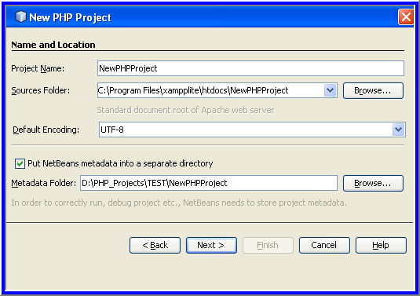
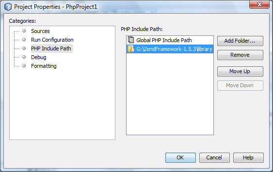

Apache NetBeans
Apache NetBeansLatest release
Настройка проекта PHP
| This tutorial needs a review. You can open a JIRA issue, or edit it in GitHub following these contribution guidelines. |
В этом учебном руководстве описывается настройка проекта PHP в IDE NetBeans.
Для работы с этим учебным курсом требуется следующее программное обеспечение и ресурсы.
| Программное обеспечение или материал | Требуемая версия |
|---|---|
Пакет загрузки PHP |
|
Механизм PHP |
Версия 5 |
Веб-сервер |
Рекомендуется использовать сервер HTTP Apache версии 2.2. |
Отладчик PHP |
Подготовка
До создания проекта PHP необходимо загрузить и установить IDE NetBeans для PHP и подготовить используемую среду для разработки PHP.
Для настройки проекта PHP выполните следующие действия.
Для изменения параметров установки существующего проекта установите курсор на узел проекта и выберите "Properties" во всплывающем меню. Установите другие параметры настройки, как описано в разделе Настройка проекта.
Указание имени проекта и местоположения исходных файлов
-
Запустите среду IDE и перейдите к окну "Projects" ("Проекты").
-
Выберите команду "Файл" > "Новый проект". Откроется панель "Выберите проект".
-
В списке категорий выберите PHP.
В зависимости от потребностей можно создать полностью новый проект PHP без использования ранее разработанных исходных файлов либо импортировать существующее локальное приложение PHP или удаленное приложение PHP в новый проект.
Проект без предварительно разработанных исходных файлов
-
В области "Проекты" выберите "Приложение PHP" и нажмите кнопку "Далее". Откроется панель "Новый проект PHP > Имя и местоположение".
-
В текстовом поле "Project Name" ("Имя проекта") введите имя проекта.
-
В поле "Sources Folder" ("Папка исходных кодов") укажите подпапку корневого узла документов, в которой следует хранить исходные файлы.
Корневой узел документов представляет собой папку, в которой на локальном веб-сервере выполняется поиск файлов для просмотра в браузере. Корневой узел документов указан в файле настройки веб-сервера. После завершения установки мастер создания проекта определяет корневой узел документов и по умолчанию указывает следующий путь: <Document Root>\<New PHP Project> .
Копия исходных файлов должна быть сохранена в подпапке корневого узла документов. Однако папка "Sources Folder" не обязательно должна находиться в корневом узле документов, ей можно назначить и другое местоположение и отсюда копировать исходные файлы в корневой узел. См. раздел Выбор настройки выполнения нового проекта.
-
В раскрывающемся списке "Default Encoding" ("Кодировка по умолчанию") выберите для проекта кодировку по умолчанию.
-
Если требуется сохранение метаданных NetBeans в другом местоположении (не в папке "Source files"), выберите команду "Put NetBeans metadata into a separate directory" ("Поместить метаданные NetBeans в отдельный каталог"). Например, может потребоваться сохранение исходных файлов в корневом узле документов, а метаданных NetBeans – в каталоге "NetBeansProjects".

-
Нажмите кнопку "Далее". Откроется панель "Настройки выполнения".
Импорт существующих локальных исходных файлов в проект
-
В области "Projects" выберите "PHP Application with Existing Sources" ("Приложение PHP с существующими исходными кодами") и нажмите "Next". Откроется панель "Новый проект PHP > Имя и местоположение".
-
В текстовом поле "Project Name" ("Имя проекта") введите имя проекта.
-
В поле "Sources Folder" укажите папку, из которой требуется импортировать исходные файлы.
| Если планируется запуск проекта на локальном веб-сервере, не забудьте указать копирование исходного файла в него. |
-
В раскрывающемся списке "Default Encoding" ("Кодировка по умолчанию") выберите для проекта кодировку по умолчанию.
-
Если требуется сохранение метаданных NetBeans в другом местоположении (не в папке "Source files"), выберите команду "Put NetBeans metadata into a separate directory" ("Поместить метаданные NetBeans в отдельный каталог"). Например, может потребоваться сохранение исходных файлов в корневом узле документов, а метаданных NetBeans – в каталоге "NetBeansProjects".

-
Нажмите кнопку "Далее". Откроется панель "Настройки выполнения".
Импорт существующих удаленных исходных файлов в проект
-
В области "Projects" выберите "PHP Application from Remote Server" ("Приложение PHP с удаленного сервера") и нажмите "Next". Откроется панель "Новый проект PHP > Имя и местоположение".
-
В текстовом поле "Project Name" ("Имя проекта") введите имя проекта.
-
В поле "Sources Folder" укажите подпапку локального корневого узла документов, в которой следует хранить исходные файлы.
Корневой узел документов представляет собой папку, в которой на локальном веб-сервере выполняется поиск файлов для просмотра в браузере. Корневой узел документов указан в файле настройки веб-сервера. После завершения установки мастер создания проекта определяет корневой узел документов и по умолчанию указывает следующий путь: <Document Root>\<New PHP Project> . Обратите внимание, что полезно иметь возможность протестировать проект на локальном сервере.
-
Если требуется сохранение метаданных NetBeans в другом местоположении (не в папке "Source files"), выберите команду "Put NetBeans metadata into a separate directory" ("Поместить метаданные NetBeans в отдельный каталог"). Например, может потребоваться сохранение исходных файлов в корневом узле документов, а метаданных NetBeans – в каталоге "NetBeansProjects".
-
Нажмите кнопку "Далее". Откроется панель "Remote Connection" ("Удаленное подключение"). Процесс настройки удаленных подключений описан в учебном курсе Развертывание приложения PHP на удаленном веб-сервере.
Выбор настройки выполнения нового проекта по умолчанию
Настройка выполнения представляет собой сохраненные параметры выполнения проекта PHP. Можно определить несколько настроек для одного проекта и переключаться между ними. Например, если приложение разработано локально и подлежит выгрузке на удаленный производственный сервер, достаточно выбрать другую настройку выполнения. Настройки выполнения применимы как по отношению к выполнению проекта, так и по отношению к отладке. Настройки выполнения соответствуют следующим широко используемым случаям.
-
Разработка веб-страниц PHP на локальном компьютере с локальным веб-сервером.
-
Выполнение сценариев PHP при помощи локального механизма PHP. Этот подход применяется к тем файлам PHP, которые не предназначены для вывода HTML. Поэтому такие сценарии могут запускаться без браузера.
-
Удаленная разработка. Исходный код PHP и другие файлы приложений выгружаются на удаленный веб-сервер по протоколу FTP. Этот вариант использования является обычным для случаев совместного применения результатов разработки многими пользователями.
-
Сочетание вышеупомянутых вариантов использования: приложение разрабатывается локально, а после выполнения развертывается на удаленном производственном сервере. При необходимости сценарии PHP выполняются в течение разработки.
При создании нового проекта PHP создается настройка выполнения проекта по умолчанию. Для выбора настройки выполнения по умолчанию для проекта выберите соответствующий пункт из раскрывающегося списка "Run As" на панели "Run Configuration". Доступны следующие параметры:
-
Локальный веб-сайт. Для использования этой настройки выполнения необходим установленный сервер HTTP Apache в рабочем состоянии.
-
Удаленный веб-сайт (FTP/SFTP) (Отдельное руководство) Для использования этой настройки обязательными являются учетная запись размещения на удаленном сервере и учетная запись FTP на этом сервере.
-
Сценарий. Эта настройка выполнения не требует наличия установленного и функционирующего веб-сервера. Достаточно указать механизм PHP.
Процесс создания дополнительных настроек выполнения или изменения настроек выполнения по умолчанию описан в разделе Пользовательская настройка проекта: Настройка выполнения. Он практически идентичен процессу создания настройки выполнения по умолчанию, за исключением использования диалогового окна "Properties" для существующего проекта вместо мастера создания проекта.
Локальный веб-сайт
Настройка локального веб-сайта включает в себя копию папок источников PHP веб-папке веб-сервера Apache, установленного на используемом компьютере. Проект часто может иметь настройку как локального, так и удаленного веб-сервера. Обратите внимание, что процедура настройки выполнения на локальном веб-сайте несколько различается в зависимости от того, создается ли проект из существующих исходных кодов или без их использования.
Настройка локального веб-сайта.
-
В раскрывающемся списке "Run As" ("Выполнить как") выберите "Local Web Site" ("Локальный веб-сайт").
-
В поле "Project URL" ("URL-адрес проекта") проверьте автоматически предложенный URL-адрес. Убедитесь, что сервер HTTP Apache прослушивает порт 80 по умолчанию. Если это не так, явным образом укажите номер порта в формате
localhost:<номер порта>.

-
При создании проекта из существующих исходных кодов можно выбрать файл исходного кода для использования в качестве файла индекса.
-
Для хранения исходных файлов проекта в другом каталоге, отличном от проекта IDE NetBeans выберите "Копировать файлы из папки исходных файлов в другое местоположение". При создании проекта из существующих исходных кодов данное действие является обязательным, кроме случаев, когда существующие исходные коды уже находились в папке "web" сервера Apache. В этом поле по умолчанию указан следующий путь:
<Document Root>\<New PHP Project>. Используйте кнопку "Browse" ("Обзор") для указания другого пути при необходимости. Корень документов – это папка, в которой веб-сервер ищет файлы для открытия в браузере. Корневой узел документов указан в файле настройки веб-сервера. Мастер обнаруживает тип установки Apache либо как отдельного компонента, либо в составе пакета и предлагает путь к папке по умолчаниюhtdocs(папка для текущего типа установки). Поэтому при принятии параметров по умолчанию в течение настройки сервера Apache или пакета AMP следует выбрать соответствующий путь в раскрывающемся списке. -
Нажмите кнопку 'Готово'. Среда IDE создает проект PHP.
Удаленный веб-сайт
См. учебный курс Развертывание приложения PHP на удаленном веб-сервере.
Сценарий
-
В раскрывающемся списке "Run As" выберите "Script".

-
Чтобы указать местоположение механизма PHP, нажмите кнопку "Configure" рядом с окном "Use Default PHP Interpreter". На вкладке "General" откроется диалоговое окно "PHP Options".

-
В поле "PHP 5 Interpreter" укажите путь к файлу
php.exe. При необходимости используйте кнопку "Browse" или кнопку "Search…". -
Для указания формы отображения результатов выполнения сценария установите соответствующий флажок в области "Open Result In". Доступны следующие параметры:
-
Окно 'Результаты'. Результаты выполнения сценария будут отображены в окне выходных данных в нижней части окна IDE NetBeans.
-
Веб-браузер. Откроется окно браузера по умолчанию с результатами выполнения сценария в форме файла HTML.
-
Редактор. Результаты выполнения сценария отобразятся в виде файла HTML в окне редактора IDE.
-
-
Нажмите кнопку "ОК". Диалоговое окно "Options" закроется, и будет выполнен возврат к панели "Run Configuration".
-
Добавьте любые аргументы, например
debug=trueи любые необязательные параметры командной строки PHP.
Настройка проекта
В ходе создания проекта определяются основные параметры настройки проекта: тип, местоположение исходных файлов и настройка выполнения по умолчанию. Для установки дополнительных параметров выполните настройку проекта. Установите курсор на узел проекта и во всплывающем меню выберите "Properties". Откроется панель "Project Properties" со списком категорий параметров установки.
Исходные файлы
На панели "Sources":
-
В поле "Web Root" отображается корневая папка местоположения приложения. По умолчанию в этом поле отображается папка "Sources". Для изменения корневого веб-узла нажмите кнопку "Browse" и выберите другую папку.
-
При необходимости выберите "Copy files from Sources Folder to another location" и укажите путь к папке, в которой сохранены данные.
-
При необходимости измените кодировку.

-
Для завершения настройки проекта нажмите кнопку "ОК".
Настройка выполнения проекта
На панели "Run Configuration" измените настройку выполнения по умолчанию и/или при необходимости определите новые настройки выполнения.
-
Для изменения параметров по умолчанию обновите поля, как при создании проекта.
-
Для определения новой настройки выполнения щелкните "New" рядом с раскрывающимся списком "Configuration". Откроется диалоговое окно "Create New Configuration".
-
В поле "Configuration Name" введите имя новой настройки выполнения и нажмите кнопку "ОК". Будет выполнен возврат к панели "Настройки выполнения".
-
Определите такие же параметры настройки, которые были установлены во время создания проекта была при определении настройки выполнения по умолчанию, и нажмите кнопку "ОК". Новая настройка добавлена в раскрывающийся список "Configuration".
-
Для удаления настройки выберите ее в раскрывающемся списке "Configuration" и нажмите кнопку "Delete" (Удалить).

-
Для завершения настройки проекта нажмите кнопку "ОК".
Панель "PHP Include Path"
На панели "Include Path" укажите местоположение файлов, которые будут использоваться в рамках проекта, однако они не должны находиться в одной папке с исходными файлами.
-
Для добавления папки нажмите "Add Folder". Откроется диалоговое окно "Select Folder".
-
Выберите требуемые папки и нажмите "Open". Будет выполнен возврат к панели "PHP Include Path". Новая папка добавлена в список.
-
Для перемещения по списку используйте кнопки "Move Up" и "Down".
-
Для удаления папки из списка включенных папок выберите папку и нажмите "Remove".

-
Для завершения настройки проекта нажмите кнопку "ОК".
Форматирование
На панели "Formatting" определите, какой стиль форматирования требуется применить в редакторе к исходным файлам. Можно указать глобальное форматирование или форматирование конкретного проекта.
Установка глобального форматирования среды IDE.
-
Выберите "Use global options".
-
Щeлкните "Edit Global Options". На вкладке "Editor > Formatting" откроется диалоговое окно "IDE Options".

-
В раскрывающемся списке "Language" выберите язык, к которому должны быть применены параметры установки.
-
В раскрывающемся списке "Categories" выберите элементы формата, к которым будут применены эти параметры.
-
Укажите нужный тип форматирования и нажмите кнопку "ОК".
-
Для получения дополнительных сведений нажмите кнопку "Help".
Выбор форматирования конкретного проекта.
-
Выберите "Use project-specific options". Отображается скрытая область.

-
В раскрывающемся списке "Language" выберите "All Languages" или "PHP". В этом случае вариант "All Languages" означает PHP и все языки PHP проекта.
-
В раскрывающемся списке "Categories" выберите элементы формата, к которым будут применены эти параметры.
-
Укажите нужный тип форматирования и нажмите кнопку "ОК".
-
Для получения дополнительных сведений нажмите кнопку "Help".
Добавление библиотек JavaScript
Встроенные библиотеки JavaScript были удалены в IDE NetBeans 6.7 из-за их очень большого размера и понижали производительность, а также потому, что библиотеки очень просто добавлять вручную. При добавлении библиотек JavaScript к проекту вручную в среде IDE проекта включаются автозавершение кода и другие функциональные возможности, связанные с JavaScript.
Добавление библиотек JavaScript к проекту.
-
Загрузите необходимые библиотеки JavaScript или укажите их местоположение, если они уже имеются.
-
Скопируйте библиотеки JavaScript в папку с проектом PHP с помощью среды IDE или проводника файлов.
Если свойства проекта установлены таким образом, что исходные коды проекта копируются в другое местоположение (см. Исходные коды), то библиотеки JavaScript также будут копироваться в это местоположение. Если развертывание проекта осуществляется на удаленном сервере, то библиотеки JavaScript загружаются на этот сервере при следующей загрузке на него исходных кодов проекта.
Для отправки комментариев и предложений, получения поддержки и новостей о последних разработках, связанных с PHP IDE NetBeans присоединяйтесь к списку рассылки users@php.netbeans.org.